Entenda como essa colaboração eleva o nível do seu aprendizado de idiomas com uma experiência mais completa e sofisticada.
Agora você já conhece em detalhes como funciona a parceria e o Ecossistema de Aceleração de Fluência da Creatus, então aproveite essa oportunidade.
É uma colaboração estratégica que une a metodologia e a estrutura da KNN Idiomas à abordagem personalizável e focada em autonomia da Creatus Polyglot School, oferecendo um caminho mais eficiente rumo à fluência.
A sua evolução é composta por dois pilares essenciais: o ecossistema da Creatus - desenvolvido com base em neurolinguística, neurociência, metacognição e neuroaprendizagem e nos mais famosos métodos de aprendizagem autônoma de línguas utilizados pelos poliglotas mais renomados do mundo, como Luca Lampariello, Lýdia Machová e Steve Kaufmann - e a sua dedicação em melhorar cada vez mais. Ou seja, nós garantimos uma estrutura forte, acompanhamento e ferramentas práticas para você evoluir muito mais rápido, mas os resultados adquiridos irão depender do seu comprometimento em colocar o sistema em prática como parte da sua rotina.
A sua aquisição do ecossistema da Creatus, feita a partir dessa parceria, tem o prazo de 5 meses. Ao final desse prazo, você pode realizar uma nova aquisição, pelo mesmo período de tempo, do idioma que você já estava estudando ou adquirir outro idioma oferecido pela plataforma.
Não há aumento automático nos valores da sua mensalidade. O ecossistema que a Creatus Polyglot School oferece é uma aquisição opcional e seu pagamento é realizado à parte, não estando atrelado aos valores das mensalidades do seu curso na KNN Idiomas.
Você já pode adquirir o seu acesso ao ecossistema completo para acelerar sua fluência clicando no botão acima, mas, se ainda tiver alguma dúvida, entre em contato pelos canais abaixo para falar diretamente conosco.
Sim. Você tem até 7 dias para pedir o cancelamento da sua compra, basta nos mandar uma mensagem ou e-mail informando seu desejo de não utilizar mais a plataforma. Caso você realize o pedido de cancelamento após esse prazo de 7 dias, você não será reembolsado, visto que essa aquisição é uma compra de pagamento único e não uma assinatura.
Sim, você pode, mas não é recomendado. Nosso Plano de Estudos apresenta um teste de nivelamento que, atualmente, é oferecido apenas nas línguas inglesa e italiana. Nesse caso, você precisa adquirir ambas as línguas separadamente. Por isso, se for de seu interesse realizar a aquisição de um segundo idioma, entre em contato conosco, pois temos um desconto especial para você.
Sim. Caso você tenha interesse em adquirir acesso a mais de um idioma, entre em contato conosco para que possamos te fornecer as informações necessárias para sua aquisição. Atualmente, os idiomas oferecidos são inglês e italiano. Estamos trabalhando arduamente para ampliar nossa gama de idiomas oferecidos futuramente.
Fale com a gente pelo WhatsApp ou e-mail e vamos responder à sua dúvida o mais breve possível